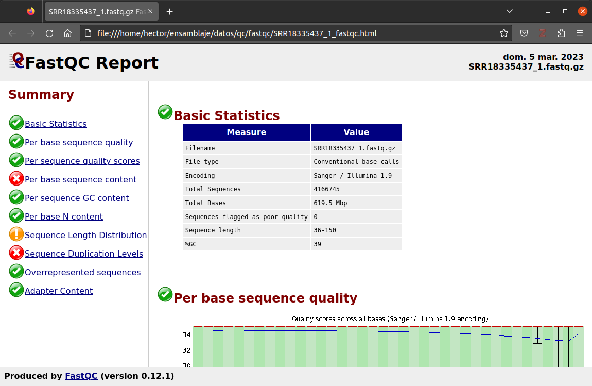
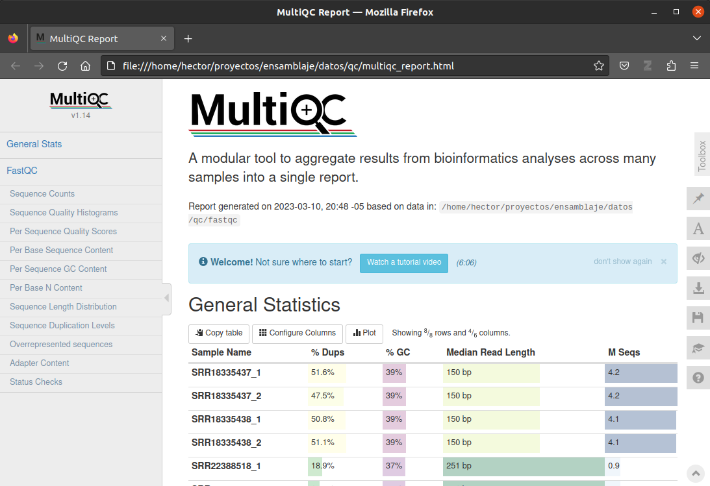
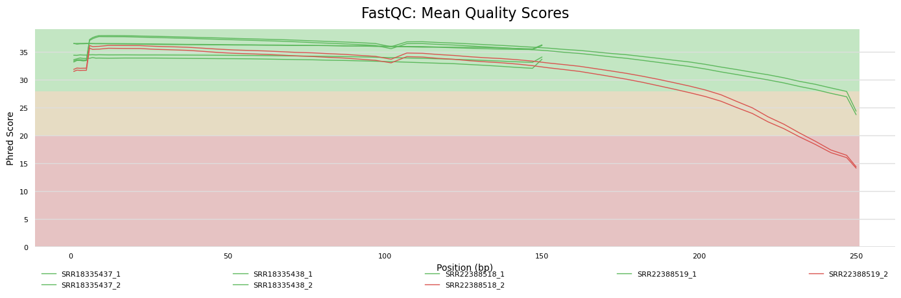
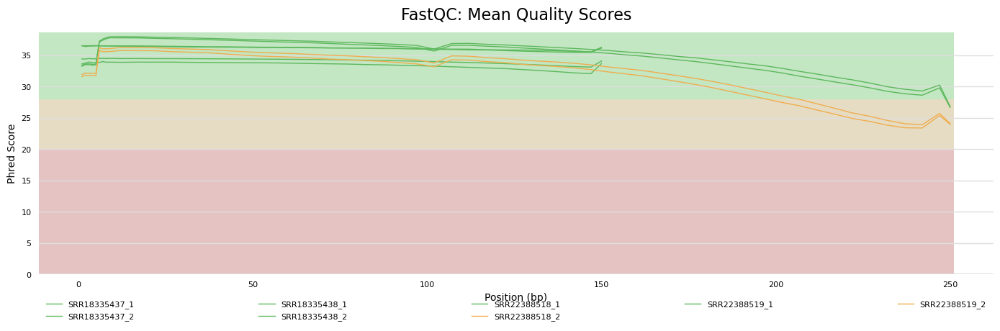

# Entrar al directorio del proyecto y al directorio datos
cd ensamblaje/datos
# Analizar todos los archivos descargados
fastqc -o qc/fastqc *.fastq.gz3 Control de calidad y limpieza de datos
Una vez descargados los datos, el siguiente paso consiste en hacer control de calidad y limpieza de los datos. En este paso primero se revisa la calidad de los datos, y luego se editan o eliminan las lecturas (reads) que no tienen la calidad necesaria para conseguir un buen ensamblaje.
Importante
Es importante comprender la calidad de los datos de secuenciación. Puede aprender sobre el puntaje Phred y cómo se codifica en el formato FASTQ en los artículos de Wikipedia “Nivel de calidad Phred” y “FASTQ format”, respectivamente.
3.1 Software requerido
| Software | Versión | Descripción | Ref. |
|---|---|---|---|
| FastQC | 0.12.1 | Herramienta para el control de calidad en datos de secuenciación de alto rendimiento | Sitio Web |
| MultiQC | 1.14 | Herramienta para unificar y resumir múltiples reportes generados por FastQC y muchos otros programas de bioinformática. | Ewels et al. (2016); sitio Web |
| fastp | 0.23.2 | Herramienta para el pre-procesamiento rápido de archivos Fastq. | Chen et al. (2018); repositorio GitHub |
3.2 Determinación de calidad
Para revisar la calidad de los datos descargados, usaremos fastqc:
A continuación verá mensajes de progreso de fastqc:
Started analysis of SRR18335437_1.fastq.gz
Approx 5% complete for SRR18335437_1.fastq.gz
Approx 10% complete for SRR18335437_1.fastq.gz
Approx 15% complete for SRR18335437_1.fastq.gz
Approx 20% complete for SRR18335437_1.fastq.gz
Approx 25% complete for SRR18335437_1.fastq.gz
Approx 30% complete for SRR18335437_1.fastq.gz
Approx 35% complete for SRR18335437_1.fastq.gz
Approx 40% complete for SRR18335437_1.fastq.gz
Approx 45% complete for SRR18335437_1.fastq.gz
Approx 50% complete for SRR18335437_1.fastq.gz
Approx 55% complete for SRR18335437_1.fastq.gz
Approx 60% complete for SRR18335437_1.fastq.gz
Approx 65% complete for SRR18335437_1.fastq.gz
Approx 70% complete for SRR18335437_1.fastq.gz
Approx 75% complete for SRR18335437_1.fastq.gz
Approx 80% complete for SRR18335437_1.fastq.gz
Approx 85% complete for SRR18335437_1.fastq.gz
Approx 90% complete for SRR18335437_1.fastq.gz
Approx 95% complete for SRR18335437_1.fastq.gz
Analysis complete for SRR18335437_1.fastq.gz
...Al final, por cada archivo .fastq analizado, fastqc genera un archivo .html con el reporte de calidad y un archivo comprimido (.zip):
ls qc/fastqcSRR18335437_1_fastqc.html SRR18335438_2_fastqc.html SRR22388519_1_fastqc.html
SRR18335437_1_fastqc.zip SRR18335438_2_fastqc.zip SRR22388519_1_fastqc.zip
SRR18335437_2_fastqc.html SRR22388518_1_fastqc.html SRR22388519_2_fastqc.html
SRR18335437_2_fastqc.zip SRR22388518_1_fastqc.zip SRR22388519_2_fastqc.zip
SRR18335438_1_fastqc.html SRR22388518_2_fastqc.html
SRR18335438_1_fastqc.zip SRR22388518_2_fastqc.zip
Nota
El archivo comprimido .zip contiene una copia del reporte .html, gráficos, y archivos de estadísticas.
3.2.1 Reporte de calidad FastQC
Analicemos uno de los reportes de calidad de FastQC. Abra el archivo SRR18335437_1_fastqc.html. El reporte contiene diferentes secciones, llamadas módulos, que corresponden a diferentes evaluaciones de calidad que la herramienta hace sobre los datos (Figura 3.1). Puede consultar información detallada (en inglés) a cerca de FastQC y sus módulos en el Apéndice A. Por cada módulo, el reporte presenta un ícono con tres posibles estados de acuerdo al resultado de la evaluación (Tabla 3.1).
| Símbolo | Descripción |
|---|---|
 |
Pasó. La muestra pasó la evaluación de calidad en esta categoría (módulo). No hay problemas de calidad. |
 |
Advertencia. La muestra tiene un posible problema calidad. El usuario debería revisar la muestra y tomar las medidas necesarias para evitar el error de ser posible. Por la naturaleza de la secuenciación de ADN, es normal que se presenten advertencias en algunos módulos en las muestras sin que signifique que haya un problema real o grave. |
 |
Falló. La muestra falló la evaluación de calidad en este módulo. El usuario debería limpiar los datos para corregir el error. |
De acuerdo con los estados, vemos que las muestras fallaron las evaluaciones de calidad de los módulos “Per base sequence quality” y “Sequence Duplication Levels”, y el módulo “Sequence Length Distribution” tiene una advertencia (Figura 3.1).

Tal vez el módulo más importante a revisar es “Per base sequence quality” (Sección A.3.5), el cual muestra el valor de calidad de por cada posición a lo largo de las secuencias del archivo procesado. Típicamente en archivos producidos con tecnología Illumina, la calidad es baja en las primeras siete a 10 bases de las secuencias, incrementando hasta alcanzar su máximo hacia la parte media de la secuencia. Luego la calidad empieza a decrecer hasta encontrar sus mínimos valores al final de la secuencia. Comúnmente la calidad mínima para lograr ensamblajes decentes es \(Q \ge 20\) (eje Y en el gráfico). Así, este gráfico el crucial para que el usuario decida el número de bases (eje X) que se recortarán en los extremos de las secuencias (inicio 5’; final 3’), los cuales típicamente contienen las secciones con menor calidad.
3.2.2 Unificando los reportes de calidad
Dado que los reportes de FastQC son independientes por cada archivo de lecturas (_1 y _2) y cada muestra, es difícil tener una visión general de la calidad de todos los datos en conjunto. Conviene entonces unificar los datos de calidad en un solo reporte para lograr una mejor interpretación de la información.
Esta unificación se logra con la aplicación MultiQC. Ejecute la siguiente orden:
multiqc --filename multiqc_report.html --outdir qc qc/fastqc /// MultiQC 🔍 | v1.14
| multiqc | Search path : /home/hector/ensamblaje/datos/qc/fastqc
| searching | ━━━━━━━━━━━━━━━━━━━━━━━━━━━━━━━━━━━━━━━━ 100% 16/16
| fastqc | Found 8 reports
| multiqc | Compressing plot data
| multiqc | Report : qc/multiqc_report.html
| multiqc | Data : qc/multiqc_report_data
| multiqc | MultiQC completeAhora MultiQC ha generado dos elementos, el archivo multiqc_report.html y un directorio multiqc_report_data que contiene archivos de estadísticas. Al abrir el reporte .html se puede ver la información de calidad de todos los archivos analizados con FastqQC (Figura 3.2).

Tip
Abra el reporte ensamblaje/datos/qc/multiqc_report.html para revisar toda la información de calidad evaluada por FastQC.
Revisando la sección “General Statistics” del reporte MultiQC, podemos observar que los tamaños de secuencia varían según la muestra. La longitud (mediana) de secuencias de las muestras SRR18335437 y SRR18335438 es de 150 bp, mientras que la de las muestras SRR22388518 y SRR22388518 es de 251 bp.
Echemos un vistazo ahora al gráfico de calidad de secuenciación en la sección “Sequence Quality Histograms” (Figura 3.3). Además de la diferencia de longitud de secuencias, se puede notar que:
La calidad al inicio de las secuencias en todos los archivos es buena (\(Q \ge 30\))
La calidad al final de las secuencias es aceptable (\(Q \ge 20\)) en todos los archivos, con excepción de las secuencias reverse (
_2) de las muestrasSRR22388518ySRR22388519.
De estas observaciones se puede concluir que la limpieza de los datos consistirá en recortar las últimas bases (aprox. 20) de los archivos SRR22388518_2.fastq.gz y SRR22388519_2.fastq.gz pues son las que presentan baja calidad. Además, como buena práctica, se eliminarán aquellas secuencias cuya calidad promedio sea \(Q < 20\).

3.3 Limpieza
Usaremos la aplicación fastp para recortar y filtrar las secuencias por calidad. Empecemos procesando la primera muestra:
# Entrar al directorio raíz del proyecto (en mi caso, /home/hector/ensamblaje)
cd ..
# Comando para ejecutar la limpieza de la primera muestra
fastp --verbose \
--thread 4 \
--detect_adapter_for_pe \
--cut_tail \
--cut_mean_quality 20 \
--average_qual 20 \
--report_title 'Reporte fastp: SRR22388518' \
--in1 datos/SRR22388518_1.fastq.gz \
--in2 datos/SRR22388518_2.fastq.gz \
--out1 resultados/00_datos_limpios/SRR22388518_1.clean.fastq.gz \
--out2 resultados/00_datos_limpios/SRR22388518_2.clean.fastq.gz \
--unpaired1 resultados/00_datos_limpios/SRR22388518_1.unpaired.fastq.gz \
--unpaired2 resultados/00_datos_limpios/SRR22388518_2.unpaired.fastq.gz \
--html resultados/00_datos_limpios/qc/fastp/SRR22388518.report.fastp.html \
--json resultados/00_datos_limpios/qc/fastp/SRR22388518.report.fastp.jsonAntes de revisar el resultado, veamos las opciones usadas con el comando y su finalidad:
--verbose: provee información adicional durante el procesamiento de los archivos--thread 4: usa cuatro hilos de ejecución de manera paralela para acelerar el procesamiento de los archivos--detect_adapter_for_pe: detecta las secuencias de adaptadores de secuenciación y las elimina--cut_tail: corta la “cola” (tail) de las secuencias, la cual se dijo tiene las bases de más baja calidad--cut_mean_quality 20: la calidad media mínima aceptada para corte de secuencias. fastp usa una ventana de 4 bases desde el extremo de la secuencia para revisar calidad; si el promedio de estas cuatro bases está por debajo de 20, elimina este extremo.--average_qual 20: la calidad media mínima aceptada para mantener una secuencia. Si al calcular la calidad media de toda la secuencia está por debajo de 20, la secuencia es descartada.--report_title 'Reporte fastp: SRR22388518': el título del reporte--in1: el archivo de secuencias forward a ser procesado--in2: el archivo de secuencias reverse a ser procesado--out1: el archivo de salida con las secuencias forward que pasaron el control de calidad--out2: el archivo de salida con las secuencias reverse que pasaron el control de calidad--unpaired1: el archivo de salida con las secuencias forward no pareadas que pasaron el control de calidad (no tienen una secuencia par reverse)--unpaired2: el archivo de salida con las secuencias reverse no pareadas que pasaron el control de calidad (no tienen una secuencia par forward)--html: el archivo de reporte en formato html--json: el archivo de reporte en formato json (estadísticas)
Tip
Para conocer todas las opciones disponibles de fastp consulte la ayuda ejecutando fastp --help.
En el anterior comando, en lugar de cortar un número determinado de bases al final de las secuencias, se usa la estrategia del programa fastp. Por cada secuencia del archivo, fastp revisa la calidad media de una pequeña porción de 4 bases, llamado ventana, empezando desde el extremo final. Si la calidad media está por debajo del mínimo definido (20 en este caso), fastp recorta esta ventana de la secuencia. Este proceso se repita hasta que no se encuentre una ventana que deba recortarse. Así, solo las secuencias con baja calidad al final son recortadas. Este mismo principio se puede aplicar para el inicio de las secuencias, cuando sea el caso.
Veamos ahora el resultado de fastp. Al ejecutar el anterior comando veremos una salida parecida a esto:
Detecting adapter sequence for read1...
>Illumina TruSeq Adapter Read 1
AGATCGGAAGAGCACACGTCTGAACTCCAGTCA
Detecting adapter sequence for read2...
No adapter detected for read2
[19:24:32] start to load data of read1
[19:24:32] start to load data of read2
[19:24:36] Read1: loading completed with 871 packs
[19:24:36] Read2: loading completed with 871 packs
[19:24:39] thread 4 data processing completed
[19:24:39] thread 4 finished
[19:24:39] thread 3 data processing completed
[19:24:39] thread 3 finished
[19:24:39] thread 2 data processing completed
[19:24:39] thread 2 finished
[19:24:39] thread 1 data processing completed
[19:24:39] thread 1 finished
[19:24:39] resultados/00_datos_limpios/SRR22388518_1.unpaired.fastq.gz writer finished
[19:24:39] resultados/00_datos_limpios/SRR22388518_2.unpaired.fastq.gz writer finished
[19:24:40] resultados/00_datos_limpios/SRR22388518_2.clean.fastq.gz writer finished
[19:24:40] resultados/00_datos_limpios/SRR22388518_1.clean.fastq.gz writer finished
[19:24:40] start to generate reports
Read1 before filtering:
total reads: 870940
total bases: 218350507
Q20 bases: 198719240(91.0093%)
Q30 bases: 184185641(84.3532%)
Read2 before filtering:
total reads: 870940
total bases: 218399177
Q20 bases: 175386628(80.3055%)
Q30 bases: 149084629(68.2624%)
Read1 after filtering:
total reads: 863093
total bases: 209876970
Q20 bases: 193175278(92.0422%)
Q30 bases: 180122777(85.823%)
Read2 after filtering:
total reads: 863093
total bases: 201834951
Q20 bases: 170111238(84.2823%)
Q30 bases: 146895463(72.78%)
Filtering result:
reads passed filter: 1726186
reads failed due to low quality: 12556
reads failed due to too many N: 488
reads failed due to too short: 2650
reads with adapter trimmed: 150684
bases trimmed due to adapters: 7399476
Duplication rate: 0.0137782%
Insert size peak (evaluated by paired-end reads): 251
JSON report: resultados/00_datos_limpios/qc/fastp/report.fastp.json
HTML report: resultados/00_datos_limpios/qc/fastp/report.fastp.html
fastp --verbose --thread 4 --detect_adapter_for_pe --cut_tail --cut_mean_quality 20 --average_qual 20 --report_title Reporte fastp: SRR22388518 --in1 datos/SRR22388518_1.fastq.gz --in2 datos/SRR22388518_2.fastq.gz --out1 resultados/00_datos_limpios/SRR22388518_1.clean.fastq.gz --out2 resultados/00_datos_limpios/SRR22388518_2.clean.fastq.gz --unpaired1 resultados/00_datos_limpios/SRR22388518_1.unpaired.fastq.gz --unpaired2 resultados/00_datos_limpios/SRR22388518_2.unpaired.fastq.gz --html resultados/00_datos_limpios/qc/fastp/SRR22388518.report.fastp.html --json resultados/00_datos_limpios/qc/fastp/SRR22388518.report.fastp.json
fastp v0.23.2, time used: 22 secondsPodemos encontrar información importante en los mensajes de la salida, como por ejemplo el número de secuencias y calidad antes y después de aplicar la limpieza o filtrado (secciones Read1 before filtering:, Read2 before filtering:, Read1 after filtering: y Read2 after filtering:), y el resumen del número de reads que pasaron y no pasaron el filtro (sección Filtering result).
Junto con los archivos de secuencias filtradas, fastp genera un archivo de reporte .html y un archivo de estadísticas.
Ahora se deben procesar el resto de los archivos:
fastp --verbose \
--thread 4 \
--detect_adapter_for_pe \
--cut_tail \
--cut_mean_quality 20 \
--average_qual 20 \
--report_title 'Reporte fastp: SRR22388519' \
--in1 datos/SRR22388519_1.fastq.gz \
--in2 datos/SRR22388519_2.fastq.gz \
--out1 resultados/00_datos_limpios/SRR22388519_1.clean.fastq.gz \
--out2 resultados/00_datos_limpios/SRR22388519_2.clean.fastq.gz \
--unpaired1 resultados/00_datos_limpios/SRR22388519_1.unpaired.fastq.gz \
--unpaired2 resultados/00_datos_limpios/SRR22388519_2.unpaired.fastq.gz \
--html resultados/00_datos_limpios/qc/fastp/SRR22388519.report.fastp.html \
--json resultados/00_datos_limpios/qc/fastp/SRR22388519.report.fastp.json
fastp --verbose \
--thread 4 \
--detect_adapter_for_pe \
--cut_tail \
--cut_mean_quality 20 \
--average_qual 20 \
--report_title 'Reporte fastp: SRR18335437' \
--in1 datos/SRR18335437_1.fastq.gz \
--in2 datos/SRR18335437_2.fastq.gz \
--out1 resultados/00_datos_limpios/SRR18335437_1.clean.fastq.gz \
--out2 resultados/00_datos_limpios/SRR18335437_2.clean.fastq.gz \
--unpaired1 resultados/00_datos_limpios/SRR18335437_1.unpaired.fastq.gz \
--unpaired2 resultados/00_datos_limpios/SRR18335437_2.unpaired.fastq.gz \
--html resultados/00_datos_limpios/qc/fastp/SRR18335437.report.fastp.html \
--json resultados/00_datos_limpios/qc/fastp/SRR18335437.report.fastp.json
fastp --verbose \
--thread 4 \
--detect_adapter_for_pe \
--cut_tail \
--cut_mean_quality 20 \
--average_qual 20 \
--report_title 'Reporte fastp: SRR18335438' \
--in1 datos/SRR18335438_1.fastq.gz \
--in2 datos/SRR18335438_2.fastq.gz \
--out1 resultados/00_datos_limpios/SRR18335438_1.clean.fastq.gz \
--out2 resultados/00_datos_limpios/SRR18335438_2.clean.fastq.gz \
--unpaired1 resultados/00_datos_limpios/SRR18335438_1.unpaired.fastq.gz \
--unpaired2 resultados/00_datos_limpios/SRR18335438_2.unpaired.fastq.gz \
--html resultados/00_datos_limpios/qc/fastp/SRR18335438.report.fastp.html \
--json resultados/00_datos_limpios/qc/fastp/SRR18335438.report.fastp.json3.4 Verificación de calidad después de la limpieza
Finalmente podemos usar FastQC y MultiQC para revisar la calidad de las muestras después de la limpieza:
# Generar reportes con FastQC
fastqc -o resultados/00_datos_limpios/qc/fastqc resultados/00_datos_limpios/*.clean.fastq.gz
# Generar reporte unificado con MultiQC
multiqc \
--filename multiqc_report.html \
--outdir resultados/00_datos_limpios/qc \
resultados/00_datos_limpios/qc/fastp \
resultados/00_datos_limpios/qc/fastqcNote que en el anterior comando de MultiQC se pasó no solo el directorio de reportes FastQC, sino también el directorio con los reportes de fastp. La aplicación se encarga de generar un solo documento .html con dos secciones, una para fastp y otra para FastQC.
Tip
Explore el reporte resultados/00_datos_limpios/qc/multiqc_report.html para ver las diferentes estadísticas de calidad después de haber aplicado los filtros a las muestras.
Echemos un vistazo al gráfico de calidad de secuenciación por base generado sobre los datos limpios (Figura 3.3). Podemos ver que las dos muestras que te tenían baja calidad hacia el final de las secuencias, ahora aparecen en color naranja, con una calidad \(Q > 20\).

Finalmente las muestras están listas para ser ensambladas.